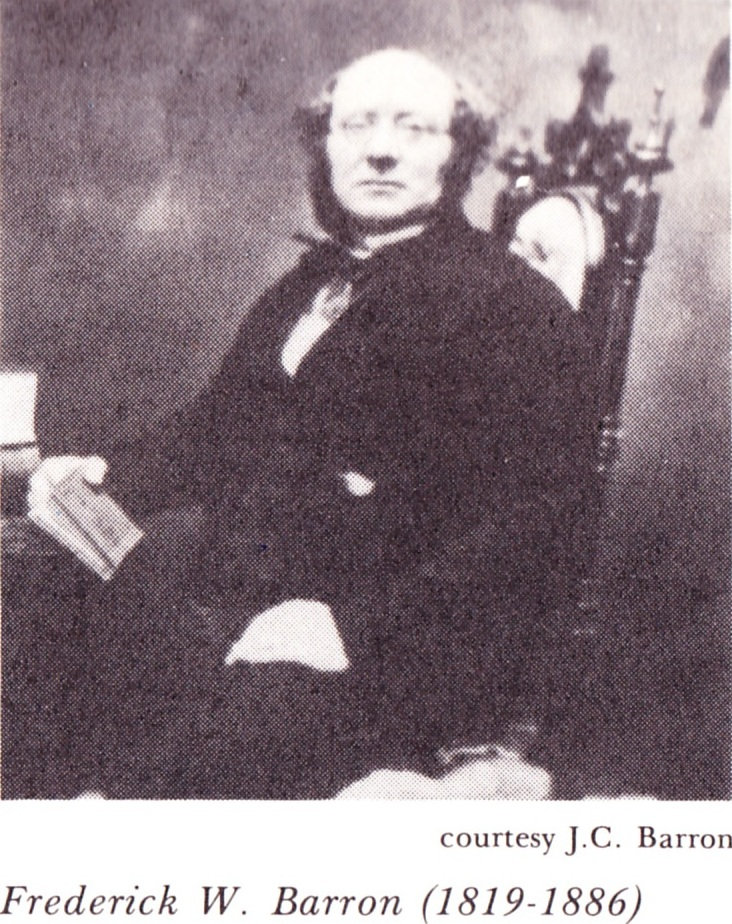
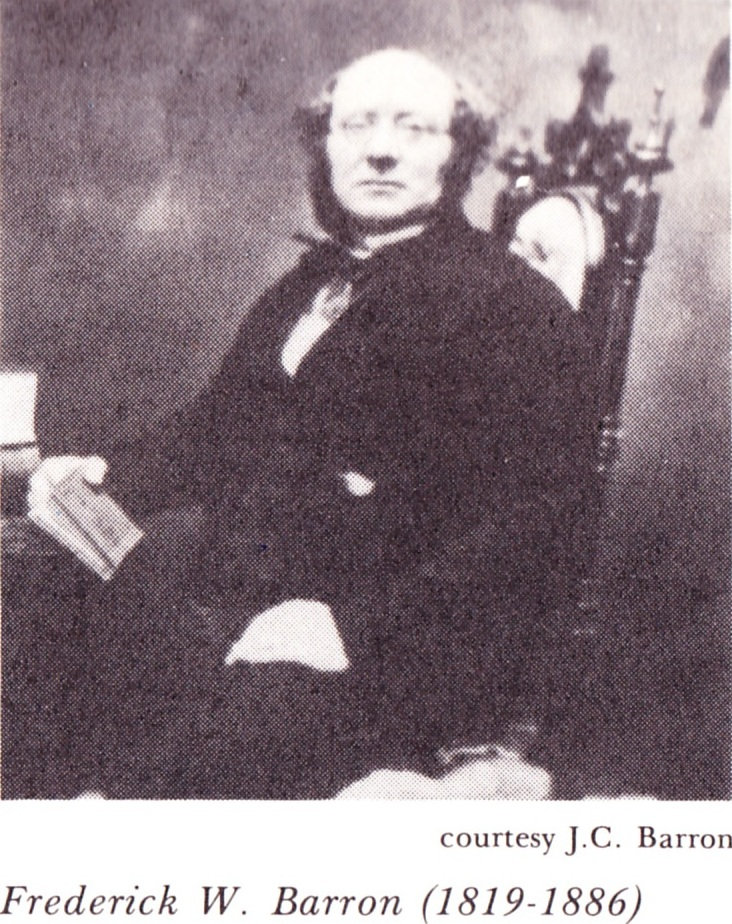

Frederick William BARRON, M.A.
- Born: Abt 1810, Wills, Norfolk County, England
- Marriage (1): Eleanor THOMPSON
- Marriage (2): Harriette Sarah HITCHCOCK on Dec 20, 1869 in Gore's Landing, Rice Lake, Hamilton Township, Ontario, Canada
- Died: Feb 2, 1886, Gore's Landing, Rice Lake, Hamilton Township, Ontario, Canada about age 76
- Buried: St. James Cemetery, Toronto, Canada

 General Notes: General Notes:
NOTEWORTHY: After marrying the widowed Harriette Hitchcock Gore at the end of 1869, Frederick Barron remodeled and enlarged Harriette's large house on the hill (Glenavy) to re-establish Frederick's "Barron School for Boys", which he opened at Glenavy, Gore's Landing on 1 Sep 1870 and ran until shortly before his death in 1886.
Used by kind permission, photograph and excerpts from "Gore's Landing and the Rice Lake Plains", by Norma Martin, Catherine Milne, Donna S. McGillis; 1986, printed by Haynes Printing of Cobourg, Ontario, Canada:
From pages 113-114:
Barron was the only master at his school which accommodated from twelve to twenty students. The curriculum was a general one with an emphasis on the classics. He believed in the rod and the Book and always dined with the boys at Glenavy to maintain order. A firm believer in order and form, he would march into the breakfast room each morning, carrying a red cushion supporting the open Bible with a rod placed upon it.
At Glenavy the afternoons were spent at sports, with two of them a week devoted to sailing. Before being allowed in a canoe, boys were required to swim to Sugar Island, a distance of half a mile.
In its sixteen years of operation the Barron School was a preparatory school for the sons and grandsons of some influential Canadians such as Postmaster-General Sir Alexander Campbell; C.J. Broughton, manager of the Great Western Railway; and Sir Richard Cartwright. Other well-known students were Copeland Clementi, journalist; Archibald Lampman Jr., poet; John MacNab Wlson of the Toronto Humane Society; and Colonel S.A. Heward. Boys from the Cobourg families of Weller, Haultain and Daintry also attended the school.
In spite of the fact that the students were mainly from wealthy families and the tuition fee was high, (£41 per year) the Barron School had financial problems. Expenses were a constant burden and Barron was ever alert for potential new pupils for the school.
Barron wrote to his son, John, 10 January 1885 during a sad Christmas season following the death of one of his daughters, Mary Agnes Wilson:
'Mother and I fully intended to spend our Xmas day at home; but as the time approached the contemplation of the vacant chair became too painfully vivid and as I was also in very low spirits in addition from my money difficulties I could not stand the ordeal.'
After his death in 1886, the twice-widowed Harriette (Gore) Barron moved to Toronto and, in 1891, sold Glenavy. Glenavy was destroyed by fire in 1910. Just visible through the vegetation at the top of Church Hill road in Gore's Landing can still be seen the foundation of the Barron School for boys.
Research Notes:
-- 1861 Census of Canada (Cobourg, Northumberland, Ontario, Canada)
-- 1871 Census of Canada (Hamilton Township, Northumberland, Ontario, Canada)
-- 1881 Census of Canada (Hamilton Township, Northumberland, Ontario, Canada)
-- Ontario, Canada, Marriages (1801-1928)
-- Canadian Poetry Press (www.uwo.ca/english/canadianpoetry/confederation/index.htm)
-- Gore's Landing and the Rice Lake Plains; by Norma Martin and Catherine Milne and Donna S. McGillis (Cobourg, Ontario, Canada: Haynes Printing, 1986)
-- Color-tinted photo courtesy of Jessie Gurd Griffith
-- Barron's School for Boys, Gore's Landing, Ontario, Canada (images.ourontario.ca/Cobourg/48304/data)
Frederick married Eleanor THOMPSON. (Eleanor THOMPSON was born about 1812 in Little Lakes, Stratford, Warwickshire County, England and died in 1853 in Toronto, Ontario, Canada.)
Frederick next married Harriette Sarah HITCHCOCK, daughter of John HITCHCOCK and Catherine NAYLOR, on Dec 20, 1869 in Gore's Landing, Rice Lake, Hamilton Township, Ontario, Canada. (Harriette Sarah HITCHCOCK was born in 1818 in Dublin, Ireland, christened in 1818 in St. Peter's Church, Dublin, Ireland and died in Apr 1893 in Fredericton, New Brunswick, Canada.)
Marriage Notes:
Marriage took place at St. George's Church on the Hill, Gore's Landing, Ontario, Canada on December 20, 1869, by Rev. Archibald Lampman.
|
") 
